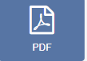
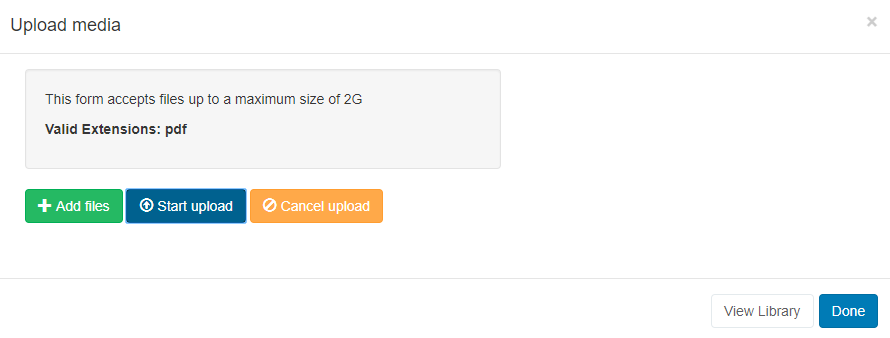
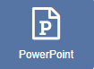
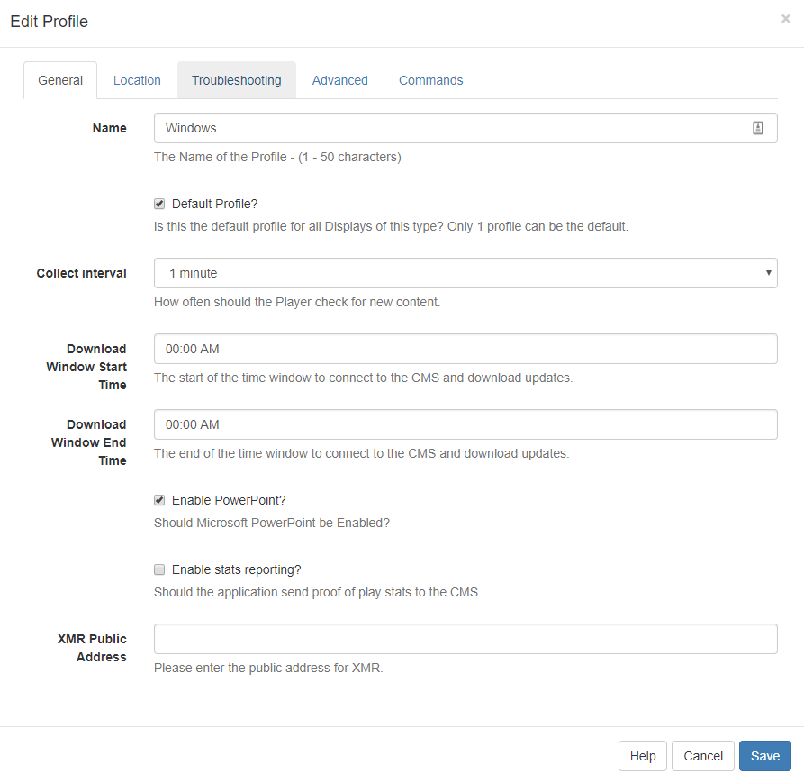

PowerPoint
SFC Technology has 3 options to display PowerPoint PPT files.
Option 1 - Exported as a Video for non-Windows Players, and or, have no full copy of PowerPoint to install.
Option 2 - Saved as a PDF for non-Windows Players, and or, have no full copy of PowerPoint to install.
Option 3 - Prepared and Uploaded as a PowerPoint PPT file for Windows Players only. Requires a full copy of PowerPoint to install on each Windows Player.
If the PowerPoint PPT file has already been uploaded to the Library use the Library Search tab to quickly and simply add to a Region.
Option 1 - Export as a Video
From Office 2010 onwards PowerPoint presentations can be exported as Video files which can then be uploaded to SFC Technology and played using the Video Widget.
Export PowerPoint
- Export a PowerPoint by using the option on the file menu from inside the PowerPoint application. Save the file with an appropriate name to be selected for upload.
If your Players are Android or webOS devices you should ensure that the export format is MP4 (PowerPoint 2013 onwards) or convert your video to a MP4 using a 3rd party tool.
Upload Video
If you are using 1.8, select Video from the Widget Toolbox to add to your Region Timeline.
- Click on the Video Widget on the toolbar, add / drag to the target Region.
- Click on Add files and select the exported PowerPoint file to upload.
Once assigned to a Region, Edit options are available.
Option 2 - Save as a PDF
- Save your PowerPoint as a PDF.
- Click on the PDF Widget on the toolbar, add / drag to the target Region. 
If you are using 1.8, select PDF from the Widget Toolbox to add to your Region Timeline.
- Select Add files and select the saved PDF file to upload.

Once assigned to a Region, Edit options are available.
Set the duration for the overall presentation and the PDF Widget will handle the number of pages to make it fit within this timescale.
Option 3 - Prepare and Upload your PowerPoint PPT file
PowerPoint is a proprietary format from Microsoft and can only be displayed on a Windows-based signage player which has Microsoft PowerPoint installed.
First prepare the PowerPoint Presentation. PowerPoint will, by default, put scroll bars up the side of your presentation, unless you do the following for each PowerPoint file BEFORE you upload it:
- Open your PowerPoint Document
- Slide Show -> Set-up Show
- Under "Show Type", choose "Browsed by an individual (window)" and then untick "Show scrollbar"
- Click OK
- Save the Presentation
- Note also that SFC Technology will not advance the slides in a Presentation, so you should record automatic slide timings by going to "Slide Show -> Rehearse Timings" and then saving the presentation.
<a name="machine_preparation"></a>
Click on the PowerPoint Widget on the toolbar, add / drag to the target Region. 
If you are using 1.8, select PowerPoint from the Widget Toolbox to add to your Region Timeline.
Click on Add files to upload to the Library or click on View Library to select an uploaded file.
Prepare your Windows Players
Install PowerPoint on your Windows PC alongside your SFC Technology Player and make the following adjustments to the Windows Registry to disable the windows prompt when opening the PowerPoint. Please ensure you have taken all necessary precautions when making these changes.
[HKEY_CLASSES_ROOT\PowerPoint.Show.12]
"BrowserFlags"=dword:00000002
"EditFlags"=dword:00010000
[HKEY_CLASSES_ROOT\PowerPoint.Show.8]
"BrowserFlags"=dword:00000002
"EditFlags"=dword:00010000
[HKEY_CLASSES_ROOT\PowerPoint.SlideShow.12]
"BrowserFlags"=dword:800000a0
"EditFlags"=dword:00010000
[HKEY_CLASSES_ROOT\PowerPoint.SlideShow.8]
"BrowserFlags"=dword:00000002
"EditFlags"=dword:00010000If you do not feel comfortable changing the registry it may be possible to achieve the same results by waiting for SFC Technology to open the first PowerPoint and then when the pop-up notification appears, choose to "Open" the file, and un-check the box so you won't be prompted again.
Enable PowerPoint on Displays
You will need to ensure that the Windows Display Profile used for the Displays you intend to use PowerPoint on, must be first enabled.
Navigate to Display Settings under the Displays section of the Main menu and locate the Windows Display Profile. Use the row menu to edit the profile. On the General tab tick the Enable PowerPoint check box and Save.

Advanced Steps
When displaying PowerPoint SFC Technology is relying on Windows and PowerPoint to display the content. This means that error capture and reporting is outside the control of Sfc technology. To mitigate any issues we recommend disabling Windows error notifications. This can be done by following the steps here.
If you still experience issues, it may also be advisable to disable Office Application Error reporting by merging the registry patch below.
[HKEY_CURRENT_USER\Software\Policies\Microsoft\Office\11.0\Common]
"DWNeverUpload"=dword:00000001
[HKEY_CURRENT_USER\Software\Policies\Microsoft\Office\10.0\Common]
"DWNeverUpload"=dword:00000001
[HKEY_CURRENT_USER\Software\Policies\Microsoft\Office\12.0\Common]
"DWNeverUpload"=dword:00000001